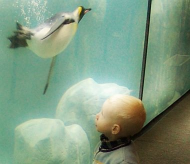

Czy wszystkie pingwiny przyjazne są dzieciom?

- Qimo - bazuje na Ubuntu
- Doudolinux - bazuje na Debianie
- Debian Jr.- dla młodszych dzieci
- Debian Edu, Skolelinux - Linux dla szkół
- Edubuntu
- Linux Edu-CD - bazuje na Knoppix
- SRU - Szkolny Remix Ubuntu
- Freeduc - francuska dystrybucja edukacyjna bazująca na Knoppix
- Trisquel on sugar - bazuje na Ubuntu
- Sugar/OLPC
Linux dla dzieci